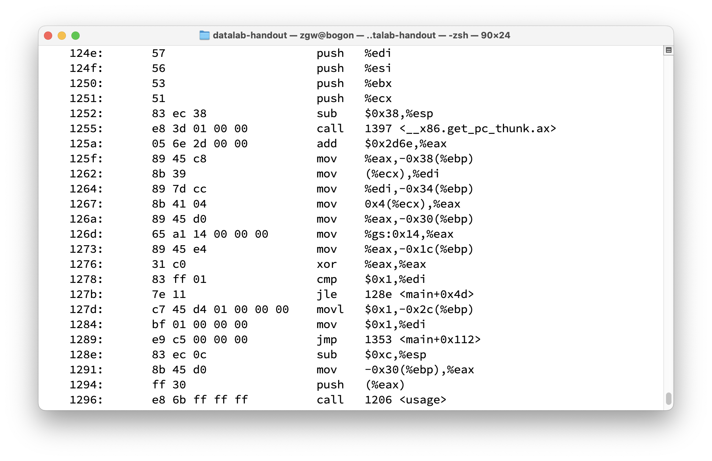
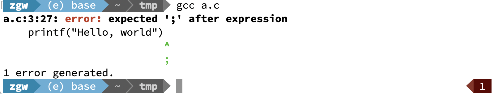
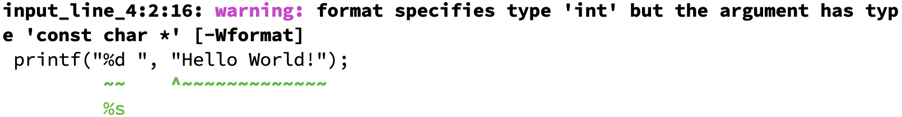
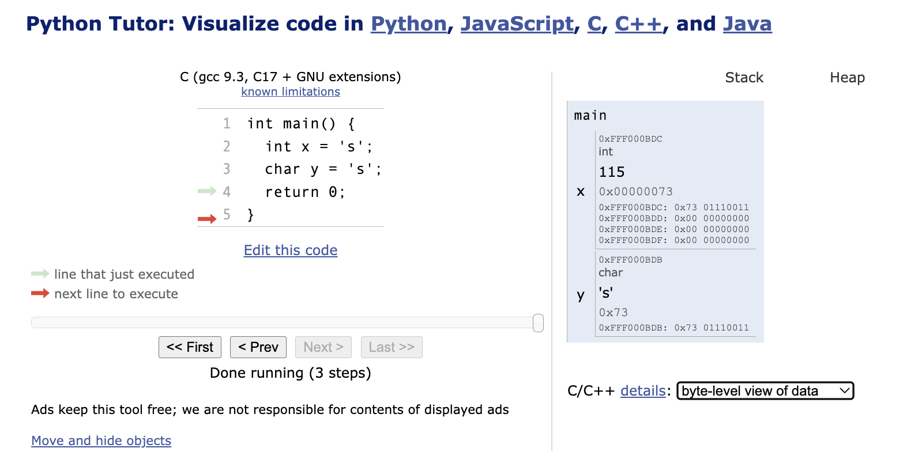
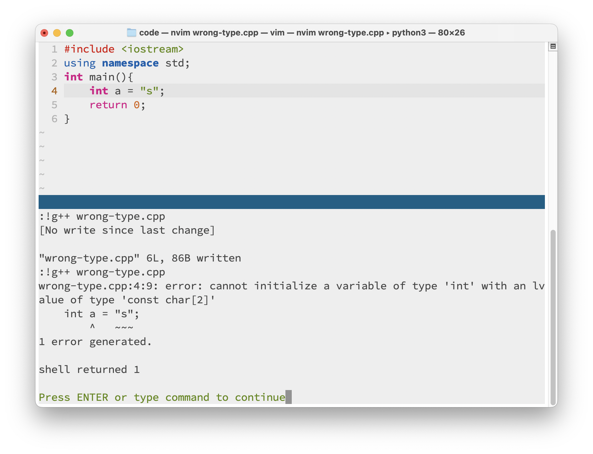
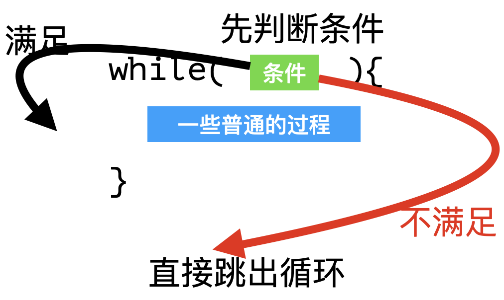
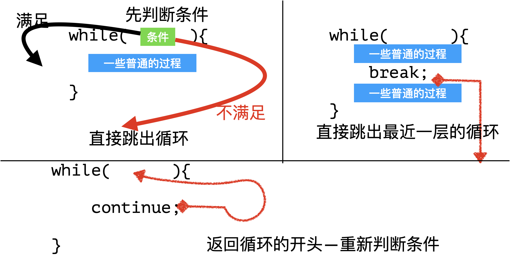
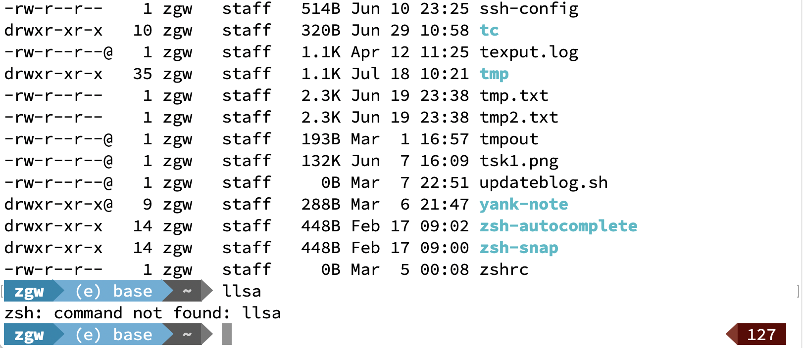

$$ \Huge \textbf{C语言介绍} $$
$$ \boxed{ \overbrace{\textit{degaokaolization}}^{\small{去高考化}} \text{ Discussion Group | Topic 03B}} $$
(如无特殊说明, 下面的内容是给Windows上面的同学写的)
上一次, 我们介绍了机器可以按照说明书那样为我们执行重复的基本指令. 但是, 都可以有怎样的指令呢? 今天我们仍旧看一个比较基础的编程语言, 让我们可以和计算机用一种比较繁琐的方式来对话.
事实上, 电脑在执行的时候只能看懂0, 1序列.
当然, 让人类直接编写0, 1序列显然是没办法做到的(这些0, 1序列是根据机器的构造设计的). 这时候, 人类先忍住自己的不适应感, 写一点简单的工具, 从而让他们更加轻松地写更加复杂的东西. 比如, 这样的0, 1序列可以用像lea这样的缩写表示, 更加方便. (lea是Load Effective Address的意思, 先不用管这是什么)

当然还有更加高级的语言. 现在, 我们有更加方便的工具来表述我们的逻辑. 我们今天就要看比较古老的语言. 在未来的日常工作中, 可能很少会直接用它, 但是了解基本的内容以及它背后的思想是至关重要的.
具体地, 我们来简单看看C语言. 由于这个内容是上个世纪发明出来的, 那时候, 计算机的内存非常的小, 很多东西也远远没有像今天这样方便. 在这种条件下, 人们还是努力制作出了更加方便的工具. 所以现在看来, 这些东西和我们日常的操作还是很不一样的.
通常来讲, 我比较喜欢使用Visual Studio Code完成一些比较小的任务(注意不是Visual Studio). 所以, 为了方便起见, 我们来先配置环境.
如果你感到想要一种快速上手的方式编写C程序, 那么你可以搜索并下载Dev-C++这个软件. 不过, 这个还是有时候隐藏了一些细节. 我们下面来看一看你在使用Dev-C++的时候, 电脑实际上做了什么.
早先, 来自GNU组织的人们为我们提供了命令行工具gcc和g++. 但是, 它们只能在Linux上面运行. 后来, 为了方便Windows上面也能方便地调试, 就有了MinGW, 这种奇怪的缩写很常见, 以至于读得多了自己就可以脑补出来. 它的意思是Minimal GNU on Windows. 我们首先需要下载MinGW. 这里是它的官方下载地址.
在这里面找到gcc和g++, 并安装.
就像任何一个语言一样, 我们先给出第一个例子: Hello, World:
#include <stdio.h>
main(){
printf("Hello, World!\n");
}
注意, 每一条语句(指令)都用分号结束. 这是C的语法.
如果我们不加分号会怎么样? 这个时候, gcc会拒绝我们, 说我们写的它看不懂.

练习1. 试错: 如果不输入第一行的#include, 可以运行吗? 如果不小心把printf漏了一个字母会怎么样? 这样子的尝试可以防止你未来面对同样的错误不知所措.
其中\n是给电脑发送一个信号, 让我换一个新的行. 当电脑读到了\的时候, 它不会认为这是一个普通的字符\, 而是想: 这次要执行什么样的魔法呢? 这就取决于\后面的字符了. 比如, \n是开辟新的一行, \t是新加一个制表符, 那么如何表示\它本身? 输入\\\\!
我想让电脑输入我的名字, 并且对我打招呼, 该怎么办呢? 事实上, 由于C语言诞生的比较古早, 正常情况下我们必须使用比较复杂的方法来输出. 但是多亏了cs50.h, 我们可以使用方便的方案来获取这些内容.
请把cs50.h复制到和这个文件一样的目录, 然后加上一行. 这次的include使用引号, 表示引进来的东西应该在当前的目录下面找.
#include <stdio.h>
#include "cs50.h" // Include file cs50.h
main(){
// a function in cs50.h
string name = get_string("What's your name? ");
printf("Hello, name!");
}
运行之后, 计算机会输出Hello, name!.
但是电脑并不知道我们的name是作为一个变量的name. 于是我们需要用某种"占位符"的方式告诉电脑: 这里你要写一个变量名. 在C语言里, 我们通常使用%作为占位符的开始, 告诉计算机, 这里你要输出一个变量.
把上述代码修改为
#include <stdio.h>
#include <cs50.h>
main(){
string name = get_string("What's your name? ");
printf("Hello, %s!", name);
}
%s意味着我需要从一个字符串string类型的变量中读取. C语言里面有很多类型, 来让我们写出正确的代码. 我们列举几个常用的
int integer 整数float 小数(小数点会浮动)double 更高精度的小数char character 字符string 字符串如果要用printf指示, 一般可以用下面列出的对应:
int integer 整数 使用%d(decimal)float 小数(小数点会浮动) 使用%fdouble 更高精度的小数 使用%lf(long float)char character 字符 使用%cstring 字符串 使用%s.这些内容需要记忆吗? 不怎么需要. 如果你一不小心搞错了, 编译器gcc会友善的触发warning来提示你, 按照它的要求改正就好了.

好, 那么上面的string name = ...是啥意思呢? 其实, 它的意思是声明了一个变量.
现在来讲, 变量可以看做一个小盒子. 里面存放着特定类型的东西. 比如一个只能装整数的小盒子, 名字叫x, 里面有一个数3, 可以这样表示: int x = 3;
发扬我们的叛逆的心理. 如果我强行给它一个值, 会怎么样呢? 我们可以看到, 有些情况, 它照样能够工作, 但是有些时候, 就会有麻烦的报错. 比如int a = 's', 其中用单引号'引起来的内容其实是一个字符. 我们发现没有任何错误发生. 这是为什么?
事实上, C语言可以将一些类型悄悄的转换. 大部分情况下, C的类型转换系统还是很正常的. 比如会把3.6这个小数转换为3这个整数. 比如char就可以被转化为int. 对于具体的s而言, 它的值是115. 为什么会有这样的转换呢?
原因在于人们早就规定好的ASCII码. 事实上, 当你查看他们的内存里面, 用0, 1序列表示的内容还是一样的(除了int一个有更多的0). 都是01110011. 我们可以使用Python Tutor这个网站提供的工具查看一些小的情况.

但是有些时候类型转换也不能明白应该如何转换. 这时候, 他就会报错:

另外, 重名的变量有时候是不能同时存在的. 具体什么时候呢? 事实上, 我们稍微使用Python Tutor做一些实验, 就会发现定义在main外面的比变量会安排的比较靠上(我们叫它全局); 在main里面的变量会被main的框框严严地包裹住(我们叫它局部). C程序允许上面的和里面的是允许重复的. 比如说, 这种情况是被允许的:
#include <stdio.h>
int value = 0; // (1)
main(){
int val = 1; // (2)
val = val + 1; // (3)
}
这时候, 语句(3)操作的val其实是语句(2)定义的. 在Python Tutor里面看一看吧!
我们现在可以写出很多有趣的小程序了. 比如我们在小学的时候计算多少$π$等于什么, 我们就可以使用这样的方法进行.
练习2. 完成小学时候要做的事情: 输入一个数$n$, 输出$n\pi$.
事实上, 有了变量之后, 我们就可以做一些基本的东西了. 但是能够做的还是不够多. 目前为止, 我们只能按照程序的行数, 一步一步来. 有没有让程序可以在步骤之间"跳来跳去呢"? 当然是可以的. 下面, 我们来介绍一个比较古老的命令: goto
$\boxed{\color{red}警告!}$ 在以后书写的语言里面, 都尽量不要使用 goto 语句! 因为它不容易被他人理解, 同时给我们未来找代码的问题带来很大的麻烦. 任何使用 goto 语句的程序可以改写成不需要使用 goto 语句的写法. 这里只是为了大家方便理解程序的"跳来跳去"这样的行为引入的.
$\boxed{\color{green}注意}$ 在一些C语言的项目中, 不是一定禁止使用goto的. 有时候使用goto反而会让代码的逻辑更加清晰. 如果你是计算机专业的同学, 这就需要你阅读代码, 来分辨那些大项目里面好的goto语句为什么好, 有什么作用.
gotogoto语句就像是说明书上面的**"请转到另外一个地方继续阅读"**. 比如: 接下页. 这里的"下页"我们叫它为标签(label). 于是如果我们的程序有了这样的标签和明确的goto的话, 就可以用作跳转了. 标签的语法是标签名字:. 要想跳转到某个标签, 就是用goto 标签;就可以了.
比如看一下下面的内容:
#include <stdio.h>
main(){
printf("This is 1\n");
printf("This is 2\n");
printf("This is 3\n");
goto nextpage;
printf("This is 4\n");
printf("This is 5\n");
printf("This is 6\n");
nextpage:
printf("This is 7\n");
printf("This is 8\n");
printf("This is 9\n");
}
哦! 我们跳过了输出4, 5, 6, 直接输出了7, 8, 9. 这是一个非常好的工具. 这个标签在什么地方可以用呢? 只要在同一个"花括号"里面, 这个标志都是可以用的.
但是我们可能更希望的是根据某个条件跳转. 就像我们曾经读过的说明书: 如果某指示灯亮了, 就参考某一节修复.
这时候, 我们来引入条件判断语句. 它的格式是if(条件) {满足时候执行的语句}.
我们下面来看几个有趣的小程序.
我们来看第二个程序: 根据输入的红绿灯信息输入判断走或者停. 这时候, 我们就可以使用刚刚的if语句了.
#include <stdio.h>
#include "cs50.h"
main(){
char light = '?';
light = get_char("What is the light?");
if(light == 'r'){
printf("Stop! \n");
}
if(light == 'g'){
printf("Go! \n");
}
}
其中使用==表示逻辑上的判断相等, 而不是赋值.
这时候如果我输入G或者R, 它就什么也没有了. 这是因为g和G, r和R在电脑的眼里看上去是不同的东西. 因此, 两个分支都没有走.
我们希望修复一下这个问题. 一种方法是复制, 粘贴. 比如:
#include <stdio.h>
#include "cs50.h"
main(){
char light = '?';
light = get_char("What is the light?");
if(light == 'r'){
printf("Stop! \n");
}
if(light == 'g'){
printf("Go! \n");
}
if(light == 'R'){
printf("Stop! \n");
}
if(light == 'G'){
printf("Go! \n");
}
}
这样的编程方法是十分不可取的. 倒不是说电脑不能运行, 而是说这会给后续的维护带来巨大的麻烦. 比如, 我们希望把Stop换成Stop here, 就要改动两处. 如果项目发展, 复制的东西越来越多, 调bug就痛不欲生了 - 你需要不断的修改每一处你复制粘贴的代码, 一个没有改过来就会导致整个系统崩盘.
$\boxed{\color{red}注意}$ 每当你想写令人不适的代码的时候, 总是要想一想有没有更好的方法来做这件事. 有了这个思路了之后, 你在理解一些他人写的项目文件就会轻松许多了.
我们更喜欢用逻辑表达式. 也就是用||表示或, &&表示与. 这样一来, 这段简洁的代码就写成了:
if(light == 'r' || light == 'R'){
printf("Stop! \n");
}
if(light == 'g' || light == 'G'){
printf("Go! \n");
}
一个有趣的话题: 如果我们写出了这样的代码, 会怎样?
#include <stdio.h>
main(){
nextpage:
printf("This is 1\n");
printf("This is 2\n");
printf("This is 3\n");
goto nextpage;
printf("This is 4\n");
printf("This is 5\n");
printf("This is 6\n");
printf("This is 7\n");
printf("This is 8\n");
printf("This is 9\n");
}
现在, 如果你运行了这个程序, 你会看到程序会不停的输出1, 2, 3, 1, ... 永不停止. 这就是我们的循环了. 当然, 我们现在不是很希望这种事情发生.
但是我们可以聪明地控制标签, 来帮助我们完成这件事: 比如我们希望计算从1加到100的和$\sum_{i=1}^{100} i$. 除去使用等差数列的求和公式之外, 我们还可以使用如下的控制流来模拟我们在手算:
#include <stdio.h>
main(){
int ans = 0; // The final answer
int i = 1; // The looping i
sum_next:
ans = ans + i;
if(i<100) {i = i+1; goto sum_next;}
printf("The answer is %d\n", ans);
}
但这样很麻烦: 我们可以先用while改写他. while的语法是这样的: while(条件){只要条件满足, 就一直执行这里面的} 不满足的时候跳出来.
用图表示出来就是这样的:

上面的程序就可被改写为:
#include <stdio.h>
main(){
int ans = 0; // The final answer
int i = 1; // (1) The looping i
while(i<100){ // (2) The condition to continue looping
ans = ans + i;
i = i+1; // (3) update the looping variable.
}
printf("The answer is %d\n", ans);
}
随着我们写循环越来越多, 很多时候我们可能需要一个辅助变量, 比如这里的i. 在循环中, 很可能有一个判断条件指示循环要不要继续做下去. 执行完循环之后, 我们很可能要用更新辅助变量.
我们有时候会在写完循环的逻辑之后忘记更新辅助变量. 想一想, 这里的(3)如果不写, 这个程序就会变成死循环, 并且表达的意思也是错的. 因此, 为了方便起见, 我们设计了一种更加不容易被忘记的for循环. 它的优点是把某一种循环做的更加集中了. for的语法也很简单: 就是for( (1); (2); (3)){过程}.
#include <stdio.h>
main(){
int ans = 0; // The final answer
// int i = 1; // (1) The looping i
// while(i<100){ // (2) The condition to continue looping
for(int i=0; i<100; i=i+1){
ans = ans + i;
//i = i+1; // (3) update the looping variable.
}
printf("The answer is %d\n", ans);
}
也就是把上面的都写在一起了. 果然是一个简单的发明! for给我们视觉上的感觉更简单明确了. 不想while, 有些东西都零散地在周围.
有趣的是, for这三个空不一定是满的. 有时候我们可以用for(;;)表示它的(1), (2), (3)都是空的. 当然其中的一部分是空的也可以.
那么, for和while哪个更高级呢? 其实他们各有各的好处. 一般而言, 如果是有明确的(1)(2)(3)这样的结构, for循环看上去更好看一些. 当然有时候循环可能也不总是很好这样写, 这时候就要用while了.
除此之外, for和while给了我们额外的便利: 如果我们在某一个条件之后不想做这个循环了, 或者说想跳过当前循环, 再循环里面也有对应的暗号: break和continue. 它们的图示如下:

对于for而言也是一样的. 在这里就不再多说了.
现在, 我们就可以用好的方法写Meow那个在Scratch里面的程序了:
#include <stdio.h>
main(){
for(int i=0; i<3; i++){
printf("Meow!\n ");
}
}
我们记得, 我们当时专门为Meow做了一块特别的积木. 这里, 能不能有一个积木呢?
当然可以! 我们把这个拆出来, 写成这样:
#include <stdio.h>
main(){
meow();
}
void meow(){
for(int i=0; i<3; i++){
printf("Meow!\n ");
}
}
我们一点一点看:
void是虚无的意思)如果我们想控制它meow了几次呢? 可以这样做:
#include <stdio.h>
main(){
meow(3); // (2) I have to tell him how many times
}
void meow(int times){ // (1) You have a input to work
for(int i=0; i<times; i++){
printf("Meow!\n ");
}
}
哦, 这一次, 我们需要一个输入 - Meow几次 - 来让这块积木正常运行. 那么, 上面我在使用这块积木的时候, 也要告诉他一个整数.
当然, 有时候我们会把一些计算过程打包过来, 并且把它赋值给一个变量. 比如计算超市的减价程序:
main(){
float regular = get_float("Regular price: ");
float sale = regular * 0.8;
printf("Sale price: %.2f", sale);
}
可以这样把regular*0.8提取出来:
main(){
float regular = get_float("Regular price: ");
float sale = discount(regular);
printf("Sale price: %.2f", sale);
}
float discount(float price){
float sale = price;
return sale;
}
电脑看到之后, 就首先会执行discount, 并且把discount(regular)这一串替换为return的值. 并且不再继续执行这块个积木.
好, 我们来用Python Tutor看一看. 这里, 我么为了保证没有不确定的输入, 我们随便给它一个值, 假设传入regular:
float discount(float price){
float sale = price;
return sale;
}
main(){
float regular = 100.0;
float sale = discount(regular);
printf("Sale price: %.2f", sale);
}
如果你把discount写在了main的下面, 编译器(准确的说在链接的时候)就会报错 - 因为它从上往下扫描的时候没有找到哪个是discount. 这时候我们需要在上面补充一个声明:
float discount(float price);
main(){
float regular = 100.0;
float sale = discount(regular);
printf("Sale price: %.2f", sale);
}
float discount(float price){
float sale = price;
return sale;
}
main也是一块积木我们可能没有想到, 其实main也是一个普普通通的积木. 我们刚刚没有写的原因是编译器可以帮助我. 编译器的一个警报告诉我它默认返回了int.
6:1: warning: return type defaults to 'int' [-Wimplicit-int]
6 | main(){
| ^~~~
In function 'main':
那main函数返回int干啥呢? 其实, 这是一个约定, 为了指示程序执行过程中有没有错误. 如果程序执行正常无误, 那么他就应该返回0. 否则, 返回非0的数就可以说明程序在某些地方存在漏洞.
所以, 我们在写一个程序的时候应该这样写, 才更加合乎情理:
float discount(float price);
int main(){
float regular = 100.0;
float sale = discount(regular);
printf("Sale price: %.2f", sale);
return 0;
}
float discount(float price){
float sale = price;
return sale;
}
如果你恰好使用命令行, 有时候会出现右侧红色箭头的东西. 这就指示了上一个程序是以某种错误的状态退出的. 比如下图中, 它没有找到llsa这个程序, 因此返回了127.

$$ -\mathscr {E}\text{nd of the note}- $$